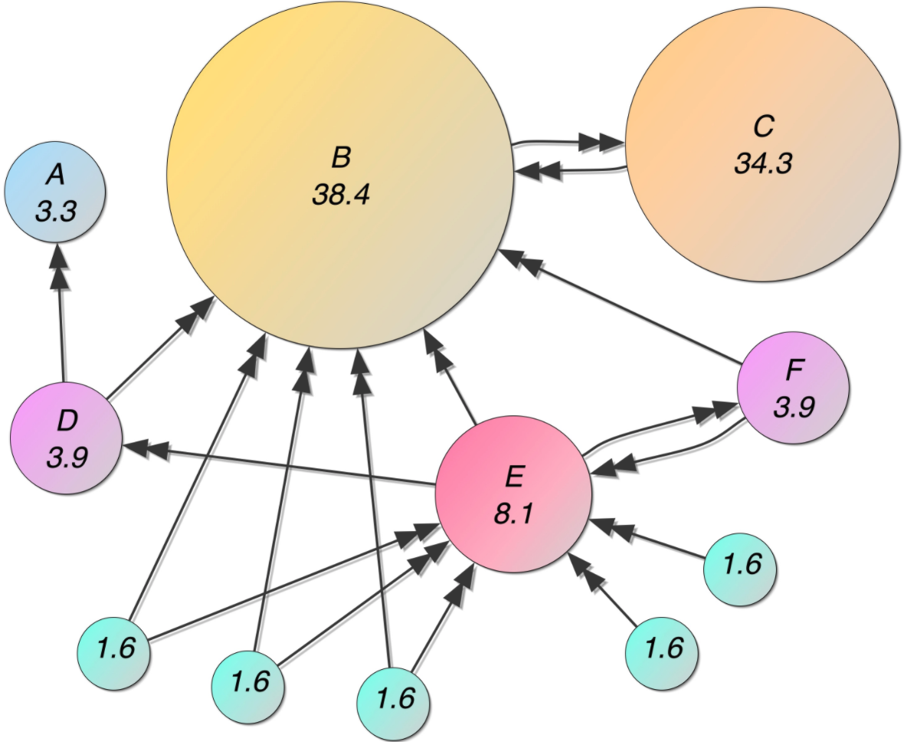

import numpy as np
import networkx as nx
import matplotlib.pyplot as plt9 Page Ranker 예제
데이터셋은 “https://github.com/lovit/kmrd”에서 다운로드 받을 수 있습니다.
9.1 Pure Python을 활용한 Page Ranker 알고리즘 구현
myWeb = nx.DiGraph()
myPages = range(1, 5)connections = [(1, 3), (2, 1), (2, 3), (3, 1), (3, 2), (3, 4), (4, 5), (5, 1), (5, 4)]
myWeb.add_nodes_from(myPages)
myWeb.add_edges_from(connections)pos = nx.shell_layout(myWeb)
nx.draw(myWeb, pos, arrows=True, with_labels=True)
plt.show()def createPageRank(aGraph):
nodes_set = len(aGraph)
M = nx.to_numpy_array(aGraph)
outwards = np.squeeze(np.asarray(np.sum(M, axis=1)))
prob_outwards = np.array([1.0/count if count > 0 else 0.0 for count in outwards])
G = np.asarray(np.multiply(M.T, prob_outwards))
p = np.ones(nodes_set) / float(nodes_set)
if np.min(np.sum(G, axis=0)) < 1.0:
print('경고: 전이 확률 합의 최솟값이 1보다 작습니다.')
return G, pG, p = createPageRank(myWeb)
print(G)9.2 고유값, 고유벡터를 활용한 Page Ranker 알고리즘 구현

마이크로 인터넷에 다음과 같이 4개의 페이지 A, B, C, D가 있다고 가정해 보겠습니다.: A↔︎B, A→C, A→D, B↔︎D, C↔︎D * 표기법은 아래와 같음 * ↔︎ 양방향 참조 * → 단방향 참조 * 모든 페이지의 클릭된 확률을 동일
- \((p(A \rightarrow B) = p(A \rightarrow C) = p(A \rightarrow D) = \frac{1}{3})\)
- \((p(B \rightarrow A) = p(B \rightarrow D) = \frac{1}{2})\)
- \((p(C \rightarrow D) = 1)\)
- \((p(D \rightarrow B) = p(D \rightarrow C) = \frac{1}{2})\)
관계를 기반으로 확률 행렬(P)을 만들어 보면 아래와 같음
\[ P = \begin{bmatrix} p(A \rightarrow A) & p(A \rightarrow B) & p(A \rightarrow C) & p(A \rightarrow D) \\ p(B \rightarrow A) & p(B \rightarrow B) & p(B \rightarrow C) & p(B \rightarrow D) \\ p(C \rightarrow A) & p(C \rightarrow B) & p(C \rightarrow C) & p(C \rightarrow D) \\ p(D \rightarrow A) & p(D \rightarrow B) & p(D \rightarrow C) & p(D \rightarrow D) \end{bmatrix} \]
\[ P = \begin{bmatrix} 0 & \frac{1}{3} & \frac{1}{3} & \frac{1}{3} \\ \frac{1}{2} & 0 & 0 & \frac{1}{2} \\ 0 & 0 & 0 & 1 \\ 0 & \frac{1}{2} & \frac{1}{2} & 0 \end{bmatrix} \]
import numpy as np
P = np.array([
[0, 1/3, 1/3, 1/3],
[1/2, 0, 0, 1/2],
[0, 0, 0, 1],
[0, 1/2, 1/2, 0]
])
np.sum(P, axis=1)- 몇가지 가정과 관찰
- 특정 시점에 페이지를 방문하는 개인 수가 \(n\)명이고 이들은 매분마다 새로운 페이지로 이동
- 한 개인이 페이지를 떠날 때마다 다른 개인이 소스 페이지에서 참조된 링크를 클릭하여 같은 페이지로 들감
- 장기적으로 가장 많은 링크가 연결된 페이지의 방문자 수가 최대
- PageRank는 프로세스 종료 시점의 총 방문자 수로 웹사이트의 순위를 나타내는 값 \[r=(rArBrCrD)\]
그런 다음 각 웹사이트의 \(i + 1\) 분까지 사용자 수는 \(i\) 번째 분의 사용자 수와 관련이 있습니다. \[r^{(i+1)}=Lr^{(i)} \text{ where } L = P^T \\ \text{ Long time behavior of this system is when } r^{(i+1)} = r^{(i)} \\ \text{ then } Lr = r \]
eigen_vals, eigen_vecs = np.linalg.eig(P.T)
order_eigen_values = np.absolute(eigen_vals).argsort()[::-1]
eigen_vals = eigen_vals[order_eigen_values]
eigen_vecs = eigen_vecs[:, order_eigen_values]r = eigen_vecs[:, 0]
rvisits = 100 * np.real(r / np.sum(r))
visits\[r=(rA=12 visitsr, rB=24 visitsr, rC=24visitsr, rD=40visits)\]
9.3 응용
9.3.1 Concept
페이지랭크(PageRank) 는 가장 대표적인 graph ranking 알고리즘입니다. PageRank는 월드 와이드 웹과 같은 하이퍼링크 구조를 가지는 문서에 상대적 중요도에 따라 가중치를 부여하는 방법으로, 웹사이트 페이지의 중요도를 측정하기 위해 구글 검색에 쓰이는 알고리즘이다. 이 알고리즘은 서로간에 인용과 참조로 연결된 임의의 묶음에 적용할 수 있다.
페이지랭크는 스탠퍼드 대학교에 재학 중이던 래리 페이지와 세르게이 브린이 새로운 검색 엔진에 대한 연구 기획의 일부로 개발한 것이다. 이 기획은 1995년 시작되어, 1998년 구글이라 불리는 시범 서비스로 발전하였다. 페이지와 브린은 페이지랭크에 기반한 검색 기술을 바탕으로 구글 사를 설립하였다.
9.3.2 Formular
PageRank 에서 각 node 의 중요도 \(PR(u)\) 는 다음처럼 계산됩니다. \(B_u\)는 page \(u\) 의 backlinks 의 출발점 마디입니다. \(v\) 에서 \(u\) 로 web page 의 hyperlink 가 있습니다. 각 page \(v\) 는 자신의 점수를 자신이 가진 links 의 개수만큼으로 나눠서 각각의 \(u\) 에게 전달합니다. \(u\) 는 \(v\) 로부터 받은 점수의 합에 상수 \(c\) 를 곱합니다. 그리로 전체 마디의 개수 \(N\) 의 역수인 \(\frac{1}{N}\) 의 \((1 - c)\) 배 만큼을 더합니다. \(c\) 는 \([0, 1]\) 사이의 상수입니다. 논문에서는 0.85 를 이용하였습니다.
\[PR(u) = c \times \sum_{v \in B_u} \frac{PR(v)}{N_v} + (1 - c) \times \frac{1}{N}\]
Academic citation literature has been applied to the web, largely by counting citations or backlinks to a given page. This gives some approximation of a page’s importance or quality. PageRank extends this idea by not counting links from all pages equally, and by normalizing by the number of links on a page.
9.3.3 Steady state and Dangling nodes
Citations 만을 생각하면 아래의 식만으로도 충분합니다. 그러나 그래프가 cyclic 이지 않으면 제대로된 계산을 할 수 없습니다. Cyclic network (graph) 란 한 마디에서 출발하여 다른 마디를 거쳐 다시 출발한 마디로 돌아올 수 있는 길이 있는 네트워크입니다. Web page hyperlinks 에서는 한 page 에서 출발하여 hyperlinks 를 누르다보면 자신의 page 로 돌아올 수 있다는 의미입니다.
\[PR(u) = \sum_{v \in B_u} \frac{PR(v)}{N_v}\]
PageRank 는 개미의 이동 모델로 설명하기도 합니다. N 개의 마디가 존재하는 graph 에 각 마디마다 공평하게 \(\frac{1}{N}\) 마리의 개미를 올려둡니다. 한 스텝마다 모든 마디의 개미들은 links 를 따라 연결된 다른 마디로 이동합니다. 한 마디의 links 가 두 개 이상이라면 개미들은 공평히 나눠져서 링크를 따라 이동합니다. 이 부분이 위 식의 \(\frac{PR(v)}{N_v}\) 입니다. Backlinks 가 많은 마디에는 많은 개미가 모입니다. 이 과정을 한 번이 아닌 여러 번 수행합니다.
이러한 과정을 확률 분야에서는 Markov model 이라 합니다. 확률 모형을 이용하여 매 스텝마다 변하는 시스템을 표현합니다. 개미가 이동하는 비율은 Markov model 의 transition matrix 에 해당합니다. 그리고 Markov model 에서는 이런 과정을 여러 번 반복하면 각 마디에 존재하는 개미의 숫자가 변하지 않는 시점 (steady state) 이 생깁니다. 대략 반복횟수 50 번 정도면 충분합니다.
그러나 어떤 마디는 backlinks 만 있고 다른 마디로 연결되는 links 가 없을 수도 있습니다(dangling node). 이 경우에 개미는 들어오기만 할 뿐 다른 마디로 나가질 못합니다. 이 문제를 해결하기 위해 각 마디에 존재하는 개미의 \(c=0.85\), 85% 만큼만 남겨두고 \((1 - c)\), 15% 는 임의의 노드로 보냅니다. 모든 마디에서 15% 의 개미가 다른 마디로 나뉘어서 보내지기 때문에 각 마디는 \(\frac{1 - c}{N}\) 의 개미가 새로 유입되는 효과가 있습니다. \(\frac{1 - c}{N}\) 은 dangling nodes 에 의하여 cyclic graph 가 만들어지지 않는 문제를 해결하기 위한 방법입니다. Random jump 를 통하여 모든 마디는 연결이 되며, cyclic network 가 됩니다.
def _normalize(G):
W_sum = {}
for t, f_dict in G.items():
for f, w in f_dict.items():
W_sum[f] = W_sum.get(f, 0) + w
A = {t:{f:w/W_sum[f] for f,w in f_dict.items()} for t, f_dict in G.items()}
nodes = set(G.keys())
nodes.update(W_sum)
return A, nodes
def pagerank(G, bias=None, df=0.15, max_iter=50, converge_error=0.001, verbose=0):
A, nodes = _normalize(G)
N = len(nodes) # number of nodes
sr = 1 - df # survival rate (1 - damping factor)
ir = 1 / N # initial rank
# Initialization
rank = {n:ir for n in nodes}
# Initialization of bias
if not bias:
bias = {node:ir for node in nodes}
# Iteration
for _iter in range(1, max_iter + 1):
rank_new = {}
# t: to node, f: from node, w: weight
for t in nodes:
f_dict = A.get(t, {})
rank_t = sum((w*rank[f] for f, w in f_dict.items())) if f_dict else 0
rank_t = sr * rank_t + df * bias.get(t, 0)
rank_new[t] = rank_t
# convergence check
diff = sum((abs(rank[n] - rank_new[n]) for n in nodes))
if diff < converge_error:
if verbose:
print('Early stopped at iter = {}'.format(_iter))
break
if verbose:
sum_ = sum(rank_new.values())
print('Iteration = {}, diff = {}, sum = {}'.format(_iter, diff, sum_))
rank = rank_new
return rankimport pickle
from pprint import pprint
with open('data/movie-actor/casting_graph.pkl', 'rb') as f:
graph = pickle.load(f)
# casting weight of movie = 10001 = 시네마천국
# pprint(sorted(graph['10001'].items(), key=lambda x:-x[1]))
with open('data/movie-actor/actors.csv', encoding='utf-8') as f:
next(f)
docs = [line[:-1].split('\t') for line in f]
_idx2actor = {doc[0]:(doc[2] if doc[2] else doc[1]) for doc in docs}
idx2actor = lambda idx: _idx2actor.get(idx, 'Unknown')
# pprint(idx2actor('4374'))
# create idx to movie name function
def append_year_countries(year, countries):
if year and countries:
return f' ({year}, {countries})'
elif year:
return f' ({year})'
elif countries:
return f' ({countries})'
return ''
with open('data/movie-actor/movies.csv', encoding='utf-8') as f:
next(f)
docs = [line[:-1].split('\t') for line in f]
_idx2movie = {doc[0]:'{}{}'.format(doc[1], append_year_countries(doc[4], doc[5])) for doc in docs if len(docs)}
_idx2year = {doc[0]:(int(doc[4]) if doc[4] else 0) for doc in docs if len(docs)}
idx2movie = lambda idx: _idx2movie.get(idx, 'Unknown')
idx2year = lambda idx: _idx2year.get(idx, 0)
# pprint(idx2movie('10001'))
# pprint(idx2year('10001'))
with open('data/movie-actor/num_comments.txt', encoding='utf-8') as f:
docs = [line[:-1].split('\t') for line in f]
_idx2numcomments = {movie_idx:int(num) for movie_idx, num in docs}
idx2numcomments = lambda idx: _idx2numcomments.get(idx,0)
# pprint(idx2numcomments('10001'))
print(idx2movie('134963'), end='\n\n')
for actor, weight in sorted(graph['134963'].items(), key=lambda x:-x[1]):
print(f'{idx2actor(actor)} : {weight}')
# bi-directed graph
# graph has only one-way link: movie -> actor
actor_weight_sum = {}
# cumulate actor weights
for movie, actors in graph.items():
for actor, weight in actors.items():
actor_weight_sum[actor] = actor_weight_sum.get(actor, 0) + weight# make bi-directed graph
from collections import defaultdict
g = defaultdict(lambda: {})
for movie, actors in graph.items():
g[f'movie {movie}'] = {f'actor {a}':w for a,w in actors.items()}
for actor, weight in actors.items():
g[f'actor {actor}'][f'movie {movie}'] = weight / actor_weight_sum[actor]
g = dict(g)
g['movie 134963']for movie in g['actor 5751']:
movie_idx = movie.split()[1]
print(idx2movie(movie_idx))rank = pagerank(g,
bias=None,
df=0.15,
max_iter=50,
converge_error=0.0001,
verbose=1)movie_rank = {node:rank for node, rank in rank.items() if node[0] == 'm'}
actor_rank = {node:rank for node, rank in rank.items() if node[0] == 'a'}
pprint(list(movie_rank)[:10])
pprint(list(actor_rank)[:10])
# top rank movie
# filtering Korean movie
korean_movies = {movie:weight for movie, weight in movie_rank.items() if '한국)' in idx2movie(movie.split()[1])}
for movie, _ in sorted(korean_movies.items(), key=lambda x:-x[1])[:100]:
movie_idx = movie.split()[1]
print(idx2movie(movie_idx))
# english_movies = {movie:weight for movie, weight in movie_rank.items() if '미국)' in idx2movie(movie.split()[1])}
# for movie, _ in sorted(english_movies.items(), key=lambda x:-x[1])[:100]:
# movie_idx = movie.split()[1]
# print(idx2movie(movie_idx))# top actor
for actor, _ in sorted(actor_rank.items(), key=lambda x:-x[1])[:100]:
actor_idx = actor.split()[1]
print(idx2actor(actor_idx), end=' ')import numpy as np
from scipy.sparse import csc_matrix
# node index
nodes = set(g.keys())
idx2node = list(sorted(nodes))
node2idx = {node:idx for idx, node in enumerate(idx2node)}
# bias
bias = {node:(idx2numcomments(node.split()[1]) if node[0] == 'm' else 0) for node in g}
_sum = sum(bias.values())
bias = {node:b / _sum for node, b in bias.items()}
bias = np.asarray([b for node, b in sorted(bias.items(), key=lambda tp:node2idx[tp[0]])])
print(bias.shape)
# transform g to sparse matrix
rows = []
cols = []
data = []
for from_node, to_dict in g.items():
from_idx = node2idx[from_node]
for to_node, weight in to_dict.items():
to_idx = node2idx[to_node]
rows.append(from_idx)
cols.append(to_idx)
data.append(weight)
A = csc_matrix((data, (rows, cols)))
print(A.shape)from sklearn.preprocessing import normalize
max_iter = 30
df = 0.85
ir = 1 / A.shape[0]
rank = np.asarray([ir] * A.shape[0])
for n_iter in range(1, max_iter + 1):
rank_new = A.dot(rank) # call scipy.sparse safe_sparse_dot()
rank_new = normalize(rank_new.reshape(1, -1), norm='l1').reshape(-1)
rank_new = df * rank_new + (1 - df) * bias
diff = abs(rank - rank_new).sum()
rank = rank_new
print(f'iter {n_iter} : diff = {diff}')rank_ = {idx2node[idx]:value for idx, value in enumerate(rank)}
movierank = {node:value for node, value in rank_.items() if 'movie' in node}
actorrank = {node:value for node, value in rank_.items() if 'actor' in node}
for movie, value in sorted(movierank.items(), key=lambda x:-x[1])[:50]:
movie_idx = movie.split()[1]
print(idx2movie(movie_idx))